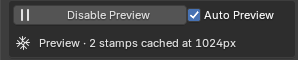

Preview¶
Applies to: Parting Placer V2.0.0 · Blender 4.4 · 5.2
Preview Mode bakes a low-resolution stand-in for your partings and shows that in the viewport. Blender stops redrawing every parting live, so the viewport stays quick.
This box appears once the head has at least one parting.

Enable Preview / Disable Preview¶
Select Enable Preview to bake the stand-in. It takes a few seconds.
When it's done, the status bar confirms it. For example: Preview Mode — 2 stamps cached at 1024px. The button then reads Disable Preview.
Select Disable Preview to get full shading back. Nothing is committed and nothing is lost. A parting you hid stays hidden.
While Preview is on:
- Partings you place stay live on top of the stand-in, so they are still quick to adjust.
- Bake Partings refuses to run. Turn Preview off first. See Bake Partings.
- Switching styles can hide partings by mistake. Turn Preview off first. See Style.
- Replace in the Parting Mask box turns Preview off, so the new mask shows.
Preview Mode is saved with the file. A file saved with it on opens with it on.
The button is greyed out if the head has no UV map.
Auto Preview¶
Ticked by default. Its tooltip reads: Freeze existing partings to a proxy while placing (above 30, live partings may fail to compile).
With it ticked, starting Place Parting on a head that already has partings switches Preview on first. Only the partings you place in that session are live. Preview stays on after you finish.
If you untick it and the head has more than 30 partings, the box shows a warning with your count. For example: 31 partings — placing without Auto Preview may fail to compile.
Preview Res¶
The resolution of the stand-in. The default is 512 px.
| Option | Tooltip |
|---|---|
| 256 px | Fast, lower quality |
| 512 px | Balanced (default) |
| 1024 px | Higher quality, slower bake |
It is hidden while Preview is on, so pick it before you select Enable Preview.
Status Lines¶
The last line of the box tells you what the viewport is showing:
| Line | Means |
|---|---|
| Live · 2 stamp(s) | Preview is off. Every parting is drawn live. |
| Preview · 2 stamps cached at 1024px | Preview is on, at that resolution. |
| Live · 50 stamps — Preview Mode recommended | Preview is off and the head has 50 or more partings. |
The counts include partings you have hidden.
If You're Stuck
- Preview is still on after you finished placing? See Preview Mode Is Still On After I Finish Placing.
- The viewport is slow? See The Viewport Is Slow.
- Bake Partings is greyed out or refuses? See Bake Partings Is Greyed Out Or Refuses.
Recommended next: Parting List